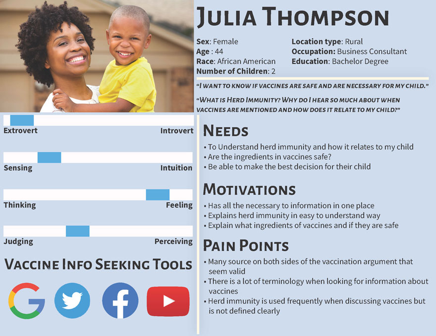
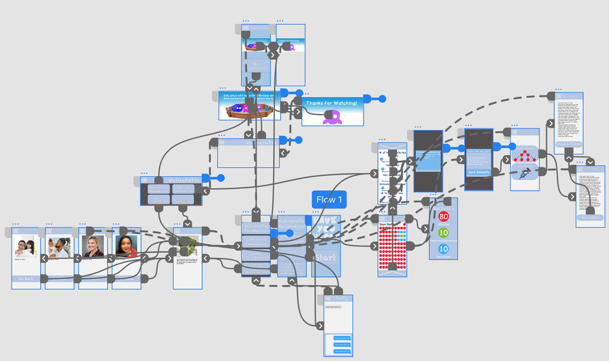
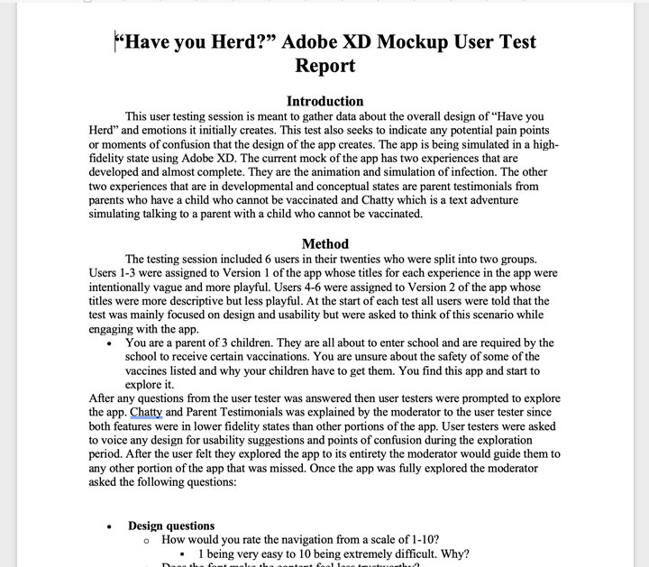
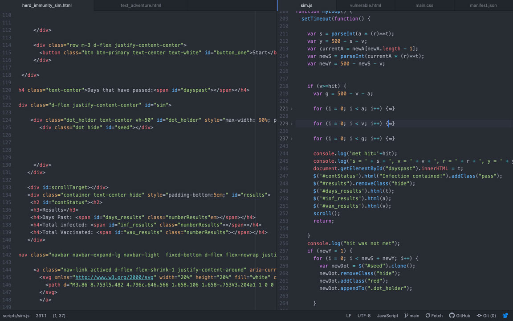

Front End Web Developer, UI/UX Developer, Interactive Designer
Front End Web Developer, UI/UX Developer, Interactive Designer
I created progressive web app or PWA (which is an app created using, HTML, CSS and JavaScript than can run in a browser or any device) that addresses the problem of the reduction of parents vaccinating their children. The desired outcome for this app is to persuade vaccine hesitant parents that vaccines are not just for their children but are needed to protect other children who can’t get vaccinated. Within the app, I used different storytelling techniques and interactive experiences to build to build an empathic argument that vaccines are needed for herd immunity.
In the first stage of development, I created drawings to visualize how I wanted app to look and function.

After, I made Illustrator mock-ups based on those drawings. This is where I considered color and took a more in-depth look at the layout of each screen.

After some feedback from my colleagues, I made some more Illustrator mockups implementing their critiques. I also included some more screens that to be considered in the final version of the app.

Before I moved on to the next stages of development, I took a step back and made personas of a couple vaccine hesitant parents. I wanted to be sure to focus on the user when continuing through the developmental process.
After my persona considerations and additional feedback from my colleagues, I took my illustrations and created high-fidelity mockup in Adobe XD.
Once I finalized my design in Adobe XD, I did some user testing with the mockup and create a report with my findings. Click to view the report.
I took all the data gathered and began coding. Throughout the is process, I made many changes based on feedback I received from my colleagues. The GitHub repository will demonstrate how these changes were made and the evolution of my code.
